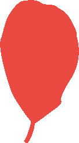
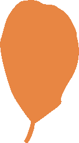
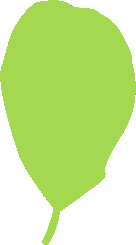
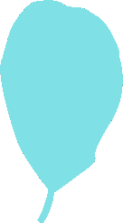
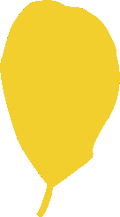
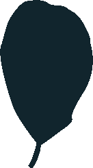
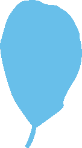
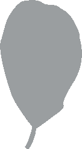

25°C
O
2
 덥네요.
지하수를 순환시켜
온도를 낮춥니다.
 조금 덥네요.
온실 창문을 열고
환기팬을 작동시킵니다.
 매우 좋아요.
현재 상태를 잘 유지합니다.
 조금 춥네요.
식물용 형광등으로
공기를 데워야겠어요.
빛이 강렬하네요.
차광막을 치고
적절한 광량을 유지합니다.
 좋아요.
햇빛을 잘 받아 무럭무럭 자라고 있습니다.
 식물에게는 밤이에요.
잠을 자며 쉬는 중입니다.
 산소가 풍부해요.
물고기가 숨쉬기에도
식물 생장에도 매우 좋습니다.
 산소가 부족해요.
지하수를 순환시켜,
물 온도를 낮추고
산소 포화도를 높여야겠어요.